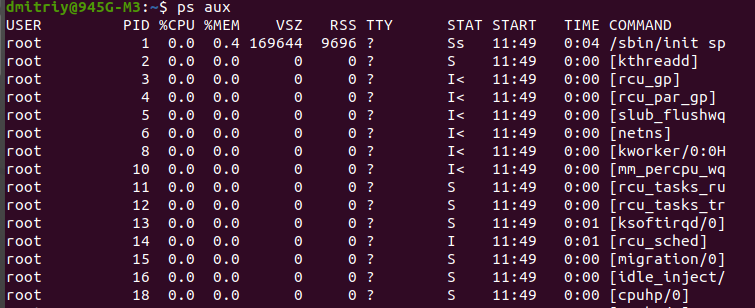
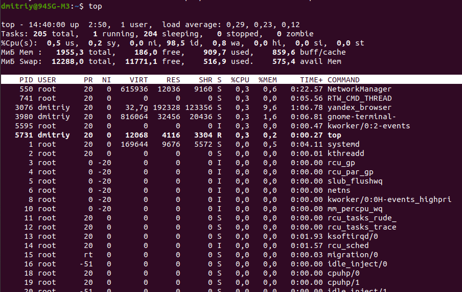

Работа с процессами
В ОС LINUX существует несколько видов можпроцессного обмена, а точнее сказать средств межпроцессного взаимодействия (Interprocess Communication – IPC), которые можно разбить на несколько уровней:- Перенаправление потоков или pipe (они же конвейеры, так же неименованные каналы)
Перенаправление ввода / вывода — это функция командной оболочки операционной системы Linux, которая позволяет перенаправить стандартные потоки в файлы или наоборот из него. Все данные распределяются между тремя стандартными потоками:
- stdin, дескриптор 0 — стандартный ввод (клавиатура);
- stdout, дескриптор 1 — стандартный вывод (вывод на экран);
- stderr, дескриптор 2 — стандартная ошибка (вывод ошибок на экран).
Перенаправление позволяет Вам указать место, куда отправляются стандартные потоки. Для этого Вы должны использовать специальные операторы перенаправления: < (меньше) и > (больше).
Одна > означает запись стандартного потока команды в файл, при этом, что до записи было в файле, все удаляется.
Две >> записывает данные в конец файла.Примеры:
- конструкцию 2>&1 применяют для перенаправления потока ошибок (stderr) в поток стандартного вывода (stdout).
- ls -l > 123.txt Здесь записываем стандартный вывод команды в файл.
- command 2 > file Здесь, если результат command будет ошибка, то сообщение об ошибке выведется не на экран, а запишется в file. Мы перенаправили сообщение об ошибке с экрана в файл.
Перенаправление на стандартный ввод из файла:
Можно наоборот перенаправлять файл на стандартный ввод, используя оператор <. Пример: cat < error.txt выведет содержимое файла error.txt
Перенаправление одновременно стандартного ввода и вывода в файл
Можно работать одновременно как и со стандартным вводом, так и со стандартным выводом. Пример:
sort < abc.txt > sorted.txt Сначала мы направили содержимое файла abc.txt на команду sort(стандартный ввод). Команда отсортировала список из файла и направила отсортированный список в новый файл sorted.txt(стандартный вывод).
Перенаправление с помощью «труб» (конвейеров):
Так называемый конвейер команд задействуется, когда Вам нужно перенаправить вывод одной команды на ввод другой команды. В основном, он используется во время построения сложных последовательностей команд.
Например, приведенная ниже команда покажет список из пяти первых строк файла /etc/passwd:
cat /etc/passwd | head -n 5
- Именованные каналы (FIFO: First In First Out)
Данный вид канала создаётся с помощью mknod или mkfifo, и два различных процесса могут обратиться к нему по имени.Пример использования именованного канала (FIFO):
# Создаём именованный канал (FIFO) с именем "mypipe"
mkfifo mypipe.
# В одном терминале вводим сообщение, которое будет записано в "mypipe"
echo "Hello from terminal 1" > mypipe.
# В другом терминале читаем сообщение из "mypipe"
cat < mypipe.
Сигналы:
посылаются:- с терминала, нажатием специальных клавиш или комбинаций (например, нажатие Ctrl-C генерирует SIGINT, а Ctrl-Z SIGTSTP);
- ядром системы:
- при возникновении аппаратных исключений (недопустимых инструкций, нарушениях при обращении в память, системных сбоях и т. п.);
- ошибочных системных вызовах;
- для информирования о событиях ввода-вывода;
- одним процессом другому (или самому себе), с помощью системного вызова kill(), в том числе: из шелла, утилитой /bin/kill.
Все сигналы начинаются на «SIG…» и имеют числовые соответствия, определяемые в заголовочном файле signal.h. Числовые значения сигналов могут меняться от системы к системе, хотя основная их часть имеет в разных системах одни и те же значения. Утилита kill позволяет задавать сигнал как числом, так и символьным обозначением.
Как я уже писал, одним из средств управления процессами являются сигналы. Некоторые сигналы можно сгенерировать с помощью определенных комбинаций клавиш, но такие комбинации существуют не для всех сигналов. Зато имеется команда kill, которая позволяет послать заданному процессу (указав его PID) любой сигнал:
kill [-SIG] PID [PID..]
где SIG — это номер сигнала или наименование сигнала, причем если указание сигнала опущено, то посылается сигнал 15 (SIGTERM — программное завершение процесса). Часто используется сигнал 9 (KILL), с помощью которого суперпользователь может завершить любой процесс. Но сигнал этот очень “грубый”, если можно так выразиться, потому что он просто «убивает» процесс, не давая ему времени на корректное сохранение всех обработанных данных. Поэтому в большинстве случаев рекомендуется использовать сигналы TERM или QUIT, которые завершают процесс более “мягко”. Если процессу необходимо как-то по-особенному реагировать на сигнал, он может зарегистрировать обработчик, а если обработчика нет, за него отреагирует система.
Два сигнала – 9 ( KILL ) и 19 ( STOP ) – всегда обрабатывает система. Первый из них нужен для того, чтобы убить процесс наверняка (отсюда и название). Сигнал STOP приостанавливает процесс: в таком состояниипроцесс не удаляется из таблицы процессов, но и не выполняется до тех пор, пока не получит сигнал 18 ( CONT) – после чего продолжит работу. В Linux сигнал STOP можно передать активному процессу с помощью управляющего символа ” ^Z “.
kill <PID>
<PID> — это идентификатор процесса, которому посылается сигнал 15 ((SIGTERM) - мягкое уничтожение процесса.
Команды pkill и killall убивают процессы по имени.
pkill <имя процесса>
killall <<имя процесса>
kill -s KILL <PID>
pkill -s KILL <имя процесса>
killall -s KILL <имя процесса>
Сигнал -s KILL — это один из параметров команд kill, pkill и killall, который отправляет сигнал KILL (9), принудительно жёстко завершая процесс.
Команда pgrep находит процессы по имени.
pgrep <имя процесса>
Управление заданиями
- bg запускает задания в фоновом режиме.
- fg переводит задания из фонового режима в нормальный.
- jobs показывает все текущие фоновые задания.
- Ctrl + Z останавливает текущую задачу и переводит её в фон.
- & помещает команду в фоновый режим при запуске.
command &
Обычные пользователи могут посылать сигналы только тем процессам, для которых они являются владельцами. Если в команде kill воспользоваться идентификатором процесса (PID), равным -1, то указанный в команде сигнал будет послан всем принадлежащим данному пользователю процессам. Суперпользователь root может посылать сигналы любым процессам. Когда суперпользователь посылает сигнал идентификатору -1, он рассылается всем процессам, за исключением системных. Если этим сигналом будет SIGKILL, то у простых пользователей будут потеряны все открытые ими, но не сохраненные файлы данных.
При обычном запуске процесс работает на переднем плане. то есть процесс “привязывается” к терминалу, с которого он запущен, воспринимая ввод с этого терминала и осуществляя на него вывод. Но можно запустить процесс в фоновом режиме, когда он не связан с терминалом, для чего в конце командной строки запуска программы добавляют символ &.
В оболочке bash имеются две встроенные команды, которые служат для перевода процессов на передний план или возврата их в фоновый режим. Команда fg переводит указанный в аргументе процесс на передний план, а команда bg — переводит процесс в фоновый режим. Одной командой bg можно перевести в фоновый режим сразу несколько процессов, а вот возвращать их на передний план необходимо по одному. Аргументами команд fg и bg могут являться только номера заданий, запущенных из текущего экземпляра shell. Возможные значения заданий можно увидеть, выполнив команду jobs.
При завершении сессии оболочка посылает всем порожденным ею процессам сигнал “отбой”, по которому порожденные ею процессы могут завершиться, что не всегда желательно. Если вы хотите запустить в фоновом режиме программу, которая должна выполняться и после вашего выхода из оболочки, то ее нужно запускать с помощью утилиты nohup:
[root@proxy 1]# nohup команда &
RPC — разновидность технологий, которая позволяет компьютерным программам вызывать функции или процедуры в другом адресном пространстве (как правило, на удалённых компьютерах). Обычно, реализация RPC технологии включает в себя два компонента: сетевой протокол (чаще TCP и UDP, реже HTTP) для обмена в режиме клиент-сервер и язык сериализации объектов (или структур, для необъектных RPC).
Сокеты UNIX бывают 2х типов: локальные и сетевые. При использовании локального сокета, ему присваивается UNIX-адрес и просто будет создан специальный файл (файл сокета) по заданному пути, через который смогут сообщаться любые локальные процессы путём простого чтения/записи из него. Сокеты представляют собой виртуальный объект, который существует, пока на него ссылается хотя бы один из процессов. При использовании сетевого сокета, создается абстрактный объект привязанный к слушающему порту операционной системы и сетевому интерфейсу, ему присваивается INET-адрес, который имеет адрес интерфейса и слушающего порта.
Управление процессами
Получение информации о процессеПеред тем как управлять процессами, нужно научиться получать о процессах необходимую информацию.
Чтобы получить список всех процессов, достаточно ввести команду:
ps aux

Прокомментируем некоторые интересные моменты. Можно заметить, что некоторые процессы указаны в квадратных скобках [ ] – это процессы, которые входят непосредственно в состав ядра и выполняют важные системные задачи, например, такие как управление буферным кэшем [pdflush] и организацией свопинга [kswapd]. С ними лучше не экспериментировать – ничего хорошего из этого не выйдет :). Остальная часть процессов относится к пользовательским.
Какую информацию можно получить по каждому процессу (комментарии к некоторым полям):
PID, PPID – идентификатор процесса и его родителя.
%CPU – доля процессорного времени, выделенная процессу.
%MEM – процент используемой оперативной памяти.
VSZ – виртуальный размер процесса.
TTY – управляющий терминал.
STAT– статус процесса:
R – выполняется;
S – спит;
Z – зомби;
< – Повышенный приоритет;
+ – Находится в интерактивном режиме.
START – время запуска.
TIME – время исполнения на процессоре.
Команда ps делает моментальный снимок процессов в текущий момент. В отличии от нее, команда top – динамически выводит состояние процессов и их активность в реальном режиме времени.
Пример вывода команды top:

В верхней части вывода отображается астрономическое время, время, прошедшее с момента запуска системы, число пользователей в системе, число запущенных процессов и число процессов, находящихся в разных состояниях, данные об использовании ЦПУ, памяти и свопа. А далее идет таблица, характеризующая отдельные процессы. Число строк, отображаемых в этой таблице, определяется размером окна: сколько строк помещается, столько и выводится.
Содержимое окна обновляется каждые 5 секунд. Список процессов может быть отсортирован по используемому времени ЦПУ (по умолчанию), по использованию памяти, по PID, по времени исполнения. Переключать режимы отображения можно с помощью следующих клавиатурных команд:
— сортировать процессы по использованию ЦПУ;
С помощью команды
Полезную информацию, так же, позволяет получить программа lsof, которая выдает список всех файлов, используемых сейчас процессами, включая каталоги, занятые потому, что какой-либо процесс использует их в качестве текущего или корневого; разделяемые библиотеки, загруженные в память; и т. д.
Итак, теперь об управлении процессами.
[root@proxy 1]# nice [- adnice] command [args]
где adnice — значение (от –20 до +19), добавляемое к значению nice процесса-родителя. Отрицательные значения может устанавливать только суперпользователь. Если опция adnice не задана, то по умолчанию для процесса-потомка устанавливается значение nice, увеличенное на 10 по сравнению со значением nice родительского процесса.
Команда renice служит для изменения значения nice для уже выполняющихся процессов. Суперпользователь может изменить приоритет любого процесса в системе. Другие пользователи могут изменять значение приоритета только для тех процессов, для которых данный пользователь является владельцем. При этом обычный пользователь может только уменьшить значение приоритета. Поэтому процессы с низким приоритетом не могут породить “высокоприоритетных детей”.
Запущенный таким образом процесс будет игнорировать посылаемые ему сигналы (не игнорируются только сигналы SIGHUP и SIGQUIT). Хочу так же выделить команду pstree, которая показывает дерево процессов. Очень наглядно, кстати.
top — это программа для мониторинга процессов в реальном времени.
htop — альтернатива top с большим количеством удобных функций.
Каждый запущенный процесс в любой момент времени находится в одном из следующих состояний (которое называют еще статусом процесса):
Сокет - это конечная точка программы / сети для связи с внешним миром.
Допустимые номера портов изменяются в диапазоне от О до 65535, хотя номера меньше 1024 зарезервированы для системы. При использовании системы, совместимой с POSIX (например, Linux, Мае OS Х и т.д.}, список зарезервированных номеров портов (наряду с обозначениями серверов и протоколов, а также типов сокетов) можно найти в файле /etc/ service s. Список известных номеров портов находится на веб-сайте http : / /www . iana . org/ assignments /port-nurnЬers.
Управление процессами в Linux
Каждому процессу при запуске устанавливается определенный приоритет, который имеет значение от -20 до +20, где +20 – самый низкий. Приоритет нового процесса равен приоритету процесса-родителя. Для изменения приоритета запускаемой программы существует утилита nice. Пример ее использования:
Горячие клавиши
htop:
top:
В каких состояниях может находиться процесс в Linux?
Сокеты
Ссылки: книга Чак Уэнсли Дж. Python. создание приложений стр. 79
Различают сокеты файловые и сетевые.
Файловые сокеты обеспечивают взаимодействие процессов и находятся внутри одного компьютера.
Вообще говоря, в языке Python поддерживаются только семейства AF _UNIX, AF NETLINK, АF_TIPC и AF_INET (AF_INET6). В этой главе основное внимание уделено сетевому программированию, поэтому в большей ее части используется семейство AF_INET.
Еще одним средством для Linux (впервые реализованным в версии 2.6) явилась поддержка протокола прозрачного межпроцессного взаимодействия (Transparent Interprocess Communication - TIPC). Протокол TIPC используется для обеспечения обмена данными между кластерами компьютеров без использования адресации на основе IP. Поддержка протокола TIPC в языке Python предусмотрена в форме семейства AF _ ТIРС.
Адреса сокетов: пара "хост-порт"
Если сам сокет можно сравнить с телефонной розеткой (частью инфраструктуры, обеспечивающей связь), то имя хоста и номер порта подобны применяемым в сочетании коду города и номеру телефона. Наличие оборудования и возможности устанавливать связь не принесет никакой пользы, если не известно, с кем и как "связываться".
Адрес в Интернете представляет собой пару, состоящую из имени хоста и номера порта. Не зная оба этих компонента, невозможно установить связь по сети.